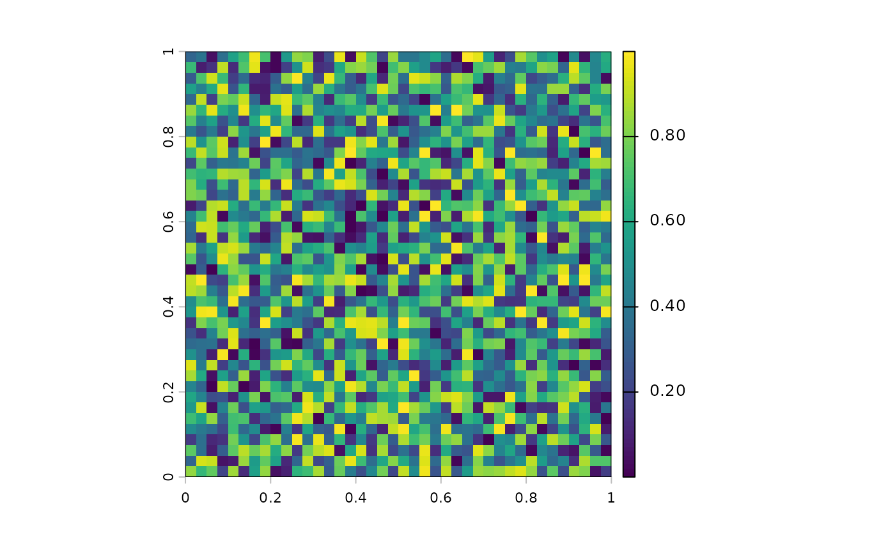
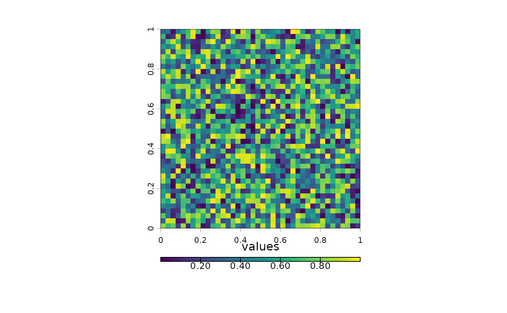
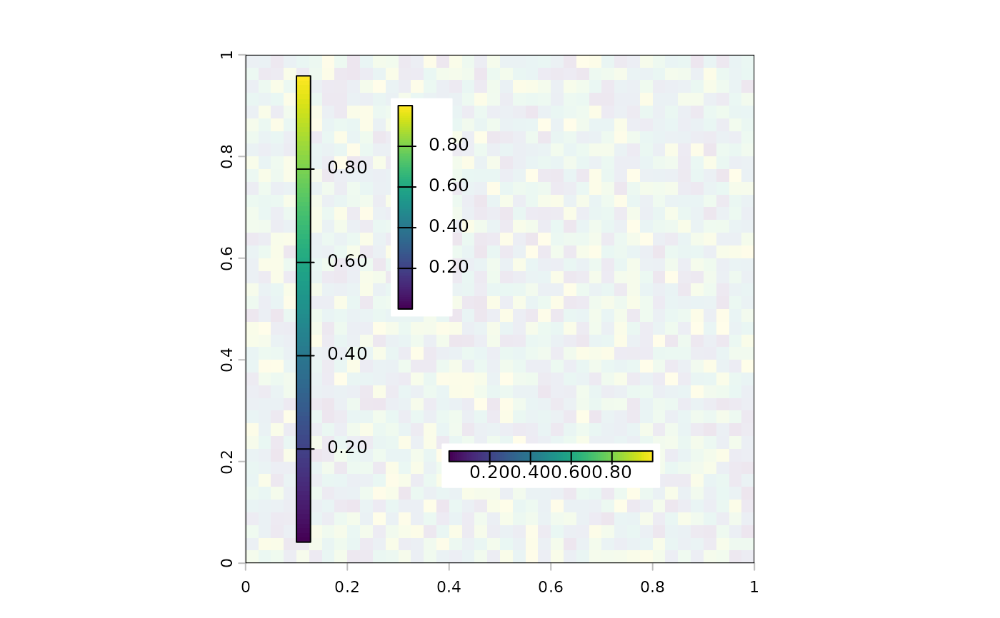
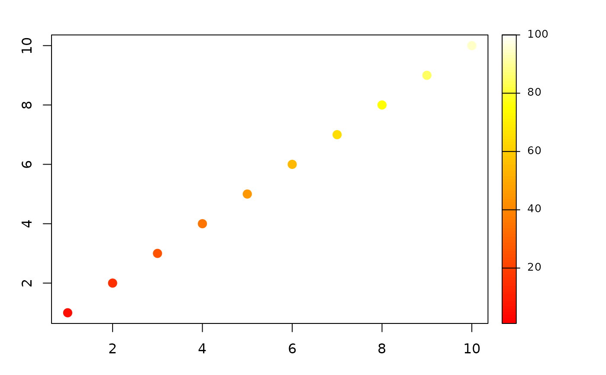

Add a continuous legend
legend_cont.RdAdd a continuous (color gradient) legend to an existing plot. This can be used with any base plot, not just plot,SpatRaster,numeric-method. The legend is drawn as a color bar with tick marks and labels.
Arguments
- x
character or numeric. Position of the legend. Keywords:
"right","left","top","bottom","topright","bottomright". Or a numeric x-coordinate (seey)- y
numeric. Optional y-coordinate(s) for the legend position, used when
xis numeric- legend
SpatRaster or numeric vector. Used to determine the value range of the legend. If a SpatRaster, the range is taken from
minmax. If numeric (e.g.c(min, max)), the range of the values is used- col
character. Vector of colors for the gradient. If missing, the default palette is used (
map.pal("viridis", 100))- size
numeric. One or two values to control the size of the legend bar. The first value scales the length (0 to 1), the second scales the width
- title
character. Title to display above or beside the legend bar
- at
numeric. Specific values at which to place tick marks. If
NULL(the default), ticks are placed automatically withpretty- digits
non-negative integer. Number of decimal places for tick labels. If
NULL(the default) an appropriate number is computed from the range- ...
Additional legend parameters:
bg(background color behind the legend, e.g."white"),cex,horiz,reverse,labels,tic(ortick),tic.col,tic.lwd,tic.box.col, and others (see theplgargument inplot,SpatRaster,numeric-methodfor details)
Examples
# with a SpatRaster
r <- rast(ncols=40, nrows=40, xmin=0, xmax=1, ymin=0, ymax=1, vals=runif(1600))
plot(r, legend=FALSE, mar=c(3.1, 3.1, 2.1, 7.1))
legend_cont("right", legend=r)

# horizontal
plot(r, legend=FALSE, mar=c(6.1, 3.1, 2.1, 2.1))
legend_cont("bottom", legend=r, horiz=TRUE, title="values")

# on the map
plot(r, legend=FALSE, alpha=0.1)
legend_cont(0.1, legend=r)
legend_cont(0.3, c(0.5, 0.9), legend=r, bg="white")
legend_cont(c(0.4, 0.8), 0.2, horiz=TRUE, legend=r, bg="white")

# with a numeric range and custom colors
cols <- heat.colors(100)
vals <- seq(5,95,10)
par(mar=c(3.1, 3.1, 2.1, 7.1))
plot(1:10, col=cols[vals], cex=2, pch=20)
legend_cont("right", legend=c(1, 100), col=cols)
